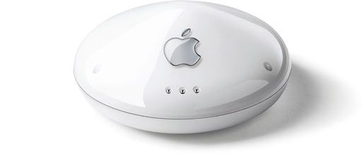

- management -
 |
All products and names are trademarks of their respective owners. . Network Management Server (NMS) Network Management This server functions as the archive base for comp. net-management, as well as for a place to bring together references to other applications and servers. In addition, this site acts as a mirror site for applications, utilities and FAQs pertinent to Network Management. |
All products and names are trademarks of their respective owners. . Network Management Server (NMS) Network Management This server functions as the archive base for comp. net-management, as well as for a place to bring together references to other applications and servers. In addition, this site acts as a mirror site for applications, utilities and FAQs pertinent to Network Management.
|  |
|
. The company was founded in 1986 and its Expert rules-driven development environment quickly became an industry standard. In 1998 Neuron Data became Blaze Software and the combined company launched its Advisor rules-management software. Today, Blaze Advisor continues to lead in the development of rules management technology as part of HNC Software. Click here for product information on Blaze Advisor. |
 |
.As an important global Microsoft partner, CA has been working in lockstep with Microsoft for several years to prepare our products and technologies for the release of their newest operating system. CA's enterprise management and information management offerings combined with Windows 2000 enable organizations worldwide to reliably, easily and efficiently run their business operations and IT infrastructure of any scale. Our commitment to Windows 2000 reinforces CA's business purpose of enabling organizations around the world to build, deploy and manage applications and resources across all IT platforms found in today's business environments. . |
A site I really like: http://www.worldpeace2000.org/